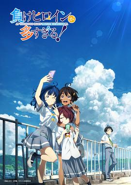

败犬女主太多了！ / 負けヒロインが多すぎる！
又名：败北女角太多了！ / Makeine: Too Many Losing Heroines!
演出真是十分夏天，有点雨宫哲的意思。开篇一股大老师的味道涌来，但是温水的吐槽的确很好笑。败北女主的一而再再而三估计就是男的拎不清。上田的声音很温柔，虽然寥寥几语，却比蝉声抓耳。（2024, 8, 7，第四集开始的小高潮有点没有由头，莫名其妙地。环境声总是随着一个对话的结束而渐次放大，很有趣。女主的jk属性果然没有雨宫他所刻画的那样灵动，这是的人物是故事的人物，可惜不鲜活。）（2024, 9, 29，完结啦，很好的追番体验，只是最后一集的原创看上去像是单纯地为了发糖而发糖。）
作品信息
| 导演 | 北村翔太郎 |
| 编剧 | 横谷昌宏 |
| 主演 | 梅田修一朗 / 远野光 / 若山诗音 / 寺泽百花 / 田中美海 / 种崎敦美 / 小林裕介 / 小林千晃 / 上田丽奈 / 逢坂良太 / 和气杏未 / 上坂堇 / 斋藤千和 / 安济知佳 / 诸星堇 / 七海弘希 |
| 类型 | 喜剧 / 爱情 / 动画 |
| 制片国家/地区 | 日本 |
| 语言 | 日语 |
| 首播 | 2024-07-14(日本) |
| 集数 | 12 |
| 单集片长 | 24分钟 |
| IMDb | tt32332831 |
说过什么
2024-09-29 12:38:59
广播 · 看过 · ★★★★☆
演出真是十分夏天，有点雨宫哲的意思。开篇一股大老师的味道涌来，但是温水的吐槽的确很好笑。败北女主的一而再再而三估计就是男的拎不清。上田的声音很温柔，虽然寥寥几语，却比蝉声抓耳。（2024, 8, 7，第四集开始的小高潮有点没有由头，莫名其妙地。环境声总是随着一个对话的结束而渐次放大，很有趣。女主的jk属性果然没有雨宫他所刻画的那样灵动，这是的人物是故事的人物，可惜不鲜活。）（2024, 9, 29，完结啦，很好的追番体验，只是最后一集的原创看上去像是单纯地为了发糖而发糖。）
2024-07-26 01:14:42
广播 · 在看 · ★★★★☆
演出真是十分夏天，有点雨宫哲的意思。开篇一股大老师的味道涌来，但是温水的吐槽的确很好笑。败北女主的一而再再而三估计就是男的拎不清。上田的声音很温柔，虽然寥寥几语，却比蝉声抓耳。
最后一次看到是 2026-10-07T23:13:45+08:00 · 豆瓣原页